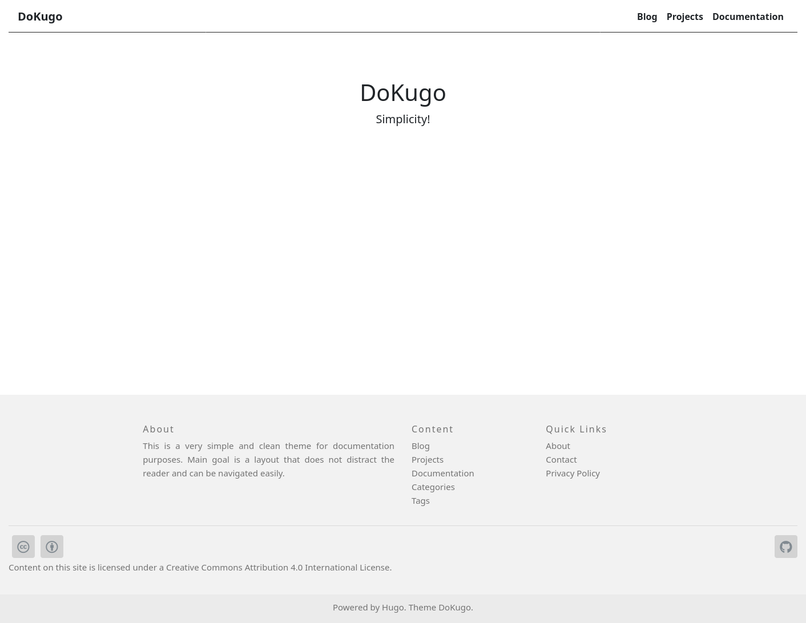

Introduction
2021-04-12 dokugothemes documentation hugo
A simple theme for technical documentation purposes.

Features
- LaTeX with MathJax
- Mermaid - generation of diagrams and flowcharts
- Breadcrumbs
- Table of Contents for articles
Preview Theme with exampleSite Content
Just visit https://akutschi.github.io/dokugo to preview this theme. But if you want to test this theme locally for playing around, just clone this repository with
git clone git@github.com:akutschi/dokugo.git
and then
cd exampleSite
hugo server --themesDir ../../
The output of the command above shows you the address, but usually you can find the page at http://localhost:1313/dokugo.
How To
Install
Basically you have to do this:
mkdir -p <SITENAME>/content
cd <sitename>
git init
git submodule add git@github.com:akutschi/dokugo.git themes/dokugo
Configure, add some content and run
$ hugo
The created public folder contains the static website. Just copy this to the server that publishes your page.
A more detailed explanation how to install this theme can be found here.
Configure
The configuration is done in your config file config.toml, config.yaml or config.json of your site.
At least choose the DoKugo theme in your config file.
theme: "dokugo"
An example of a config file can be found in the exampleSite directory.
Just copy the content or even the whole file into the root directory of your site.
Details about the configuration can be found here.
Create and Manage Content
Basically put your content as markdown files into the content folder. You can also create there subfolders to structure your publications.
Here are more details.
Deploy Manually
The description of the manual deployment can be found here.
Deploy with GitHub Actions and Pages
In principal the same as in the previous section but we do not run hugo manually to create and publish the site.
Instead we use GitHub Actions and publish on GitHub Pages.
We just have to add two folders and one file to achieve this.
The procedure can be found here.
Deploy with GitLab CI/CD and Pages
This is even simpler than the deployment with GitHub. It’s just one file in the project root to run GitLab CI/CD and deploy on GitLab Pages.
The documentation can be found here.